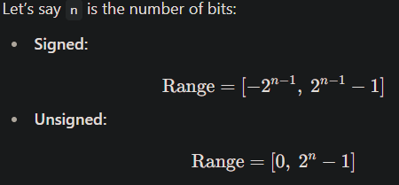

üî§ What Are Variable Data Types in SystemVerilog?
In SystemVerilog, variable data types define the kind of value a variable can hold — its size, range, numeric type, and behavior during operations.
üåó Types of Numeric Variables
- Fixed-Point Variables (Integer Types)
Used for bit-precise hardware modeling. These are stored as binary integers with a fixed number of bits. - Floating-Point Variables
Used for high-precision, real-valued math. These variables support fractions and large/small numbers in scientific notation.
üßÆ 1. Fixed-Point Variables
These are 2-state variables, meaning they store only 0 or 1 — no x (unknown) or z (high-impedance). They are highly suitable for RTL modeling and arithmetic.
üîπ Types of Fixed-Point Variables
| Data Type | Size | Signed/Unsigned | Value Range |
|---|---|---|---|
| byte | 8 bits | Signed | -128 to 127 |
| shortint | 16 bits | Signed | -32,768 to 32,767 |
| int | 32 bits | Signed | -2,147,483,648 to 2,147,483,647 |
| longint | 64 bits | Signed | -9,223,372,036,854,775,808 to 9,223,372,036,854,775,807 |
| byte | 8 bits | Unsigned | 0 to 255 |
| shortint | 16 bits | Unsigned | 0 to 65,535 |
| int | 32 bits | Unsigned | 0 to 4,294,967,295 |
| longint | 64 bits | Unsigned | 0 to 18,446,744,073,709,551,615 |
ü߆ How Are Ranges Calculated?
üîÅ Signed vs Unsigned Behavior
✅ Signed
Can represent positive and negative values. Uses two’s complement internally.
✅ Unsigned
Represents only non-negative values.
üß™ Example:
bit [7:0] a = 8'b11111111; // Unsigned: 255
logic signed [7:0] b = 8'b11111111; // Signed: -1
➕ Signed vs Unsigned Arithmetic
❌ Problem:
logic signed [7:0] x = -5;
logic [7:0] y = 10;
logic signed [7:0] z = x + y; // Might misinterpret y
✅ Solution:
z = x + signed'(y); // Cast y to signed
üßæ Declaring Signed and Unsigned
| Data Type | Signed Declaration | Unsigned Declaration |
|---|---|---|
| byte | byte signed a; | byte unsigned a; |
| shortint | shortint signed a; | shortint unsigned a; |
| int | int signed a; | int unsigned a; |
| longint | longint signed a; | longint unsigned a; |
| logic | logic signed [7:0] a; | logic [7:0] a; |
üì§ Sign Extension in Assignments
SystemVerilog extends smaller values to larger ones based on sign:
- Signed → larger signed: retains sign via sign extension
- Signed → larger unsigned: misinterpreted
- Unsigned → larger signed: padded with 0s
üß™ Example:
logic signed [3:0] a = -5; // binary: 1011
logic signed [7:0] b = a; // b = 11111011 (-5)
logic [7:0] c = a; // c = 00001011 (incorrect if you expect -5)
✅ Fix:
logic [7:0] c = signed'(a);
⚖️ Comparing Signed and Unsigned
❌ Incorrect:
logic signed [7:0] a = -1;
logic [7:0] b = 200;
if (a < b) // May evaluate wrong
✅ Correct:
if (signed'(b) > a)
üî¨ 2. Floating-Point Variables
Used when high-precision real number math is required. Not synthesizable — simulation only.
✅ Type: real
| Data Type | Size | Approximate Range |
|---|---|---|
| real | 64 bits | ~ ±1.7 × 10³⁰⁸ |
üß™ Example:
real pi = 3.1415926535;